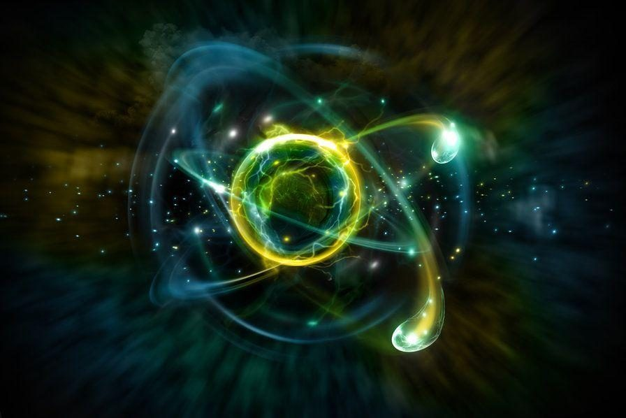

概念澄清
科学哲学（Philosophy of science）是哲学的一个分支，涉及科学的基础、方法和影响。本领域的核心问题涉及什么才算是科学、科学理论的可靠性以及科学的最终目的。这门学科与形而上学、本体论和认识论重叠，例如，当它探索科学与真理之间的关系时。科学哲学侧重于科学的形而上学、认识论和语义方面。生物伦理学和科学不端行为等伦理问题通常被视为伦理学或科学论，而不是科学哲学。
科学哲学是现代西方哲学很重要的一环，但我们需要区分两个概念，一个叫做科学哲学，一个叫做科学的哲学。科学的哲学，原本是用来区别于黑格尔式的哲学，黑格尔式的哲学的特点就是用辩证法把天上地下全部囊括进来，而科学的哲学力图消除辩证法，且以实证的方式。科学哲学是用现代分析哲学的方法来分析知识现象的哲学，因此他是知识论的一环，他要通过知识的角度来反思现代科学。科学哲学有多个流派，最著名的是逻辑实证主义，后来又有否证主义、自然主义、科学实在论等等。Read more...
科学哲学的意义？
Philosophy of science is about as useful to scientists as ornithology is to birds.
--Feynman
（科学哲学对于科学家的作用就像鸟类学对于鸟类一样。
——费曼）
诚然，费曼那句被引用烂的话是有道理的，但这并不表示科学哲学的研究是没有价值的，或者我们不应该花时间研究科学哲学。科学哲学的意义并不依赖于科学上。作为哲学分支的科学哲学同科学一样，是一项human intellectual activity，其价值并不仅仅在于有什么实用意义。人类社会早已发展到超出吃饭睡觉繁衍的范围。打球有什么用？打游戏有什么用？撸[—哔—打码小妖精纯洁地路过]又有什么用，反正最后还不是都射到墙上了？事实上，用网上一句来形容，做研究的快感强烈而持久，远胜于那几秒寒颤之后无边的空虚和落寞。也许对于许多科学哲学的研究者来说，科学就和鸟一样—它那么美那么玄妙那么令人目眩神迷，令人愿意倾尽一生只是静静地看着。而科学哲学的相关问题的产生也是自然而然的：它是什么？它为什么这么美？Read more...